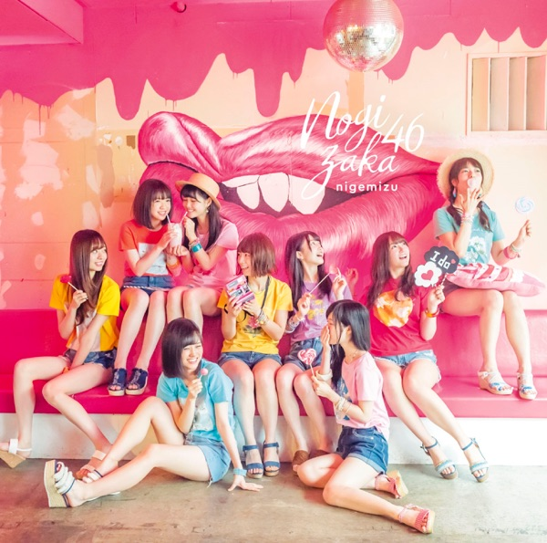

サカミチ
サカミチ女は一人じゃ眠れないおんなはひとりじゃねむれない

初収録リリース「逃げ水」のジャケット
歌唱メンバー（18名）
秋元真夏、生田絵梨花、生駒里奈、伊藤万理華、井上小百合、衛藤美彩、齋藤飛鳥、桜井玲香、白石麻衣、高山一実、西野七瀬、星野みなみ、松村沙友理、若月佑美、新内眞衣、堀未央奈、大園桃子、与田祐希
この曲が披露されたライブ（33件）
新しい順に20件まで表示しています（全33件）。
同じリリースの曲
逃げ水、女は一人じゃ眠れない、ひと夏の長さより・・・、アンダー、ライブ神、未来の答え、泣いたっていいじゃないか？